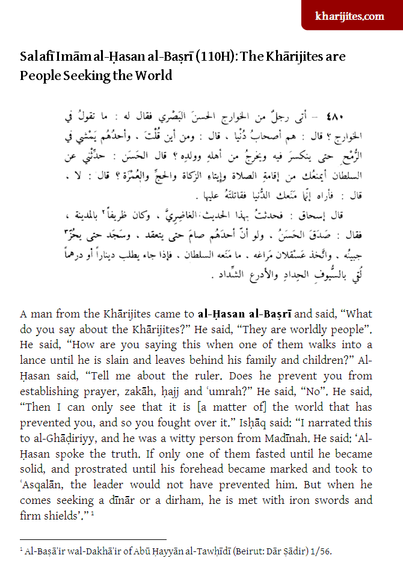

Kharijites.Com
Posted by Abu Iyaad on Friday, October, 14 2016 and filed under Salaf
Al-Ḥasan al-Baṣrī revealed the reality of the Khārijites. He explained that the rulers do not prevent them praying, fasting, performing Ḥajj and other personal obligations or commended actions. As religion cannot be the reason [because they have not been personally hindered therein], it is clear that other motives are in place and are worldly in nature, pertaining to wealth (how it is used) and authority (where it is placed and to whom it is given). In reality, they fight for the world, cloaked in religion.
 Click the icon or this link to download and view the full article.
Click the icon or this link to download and view the full article.
